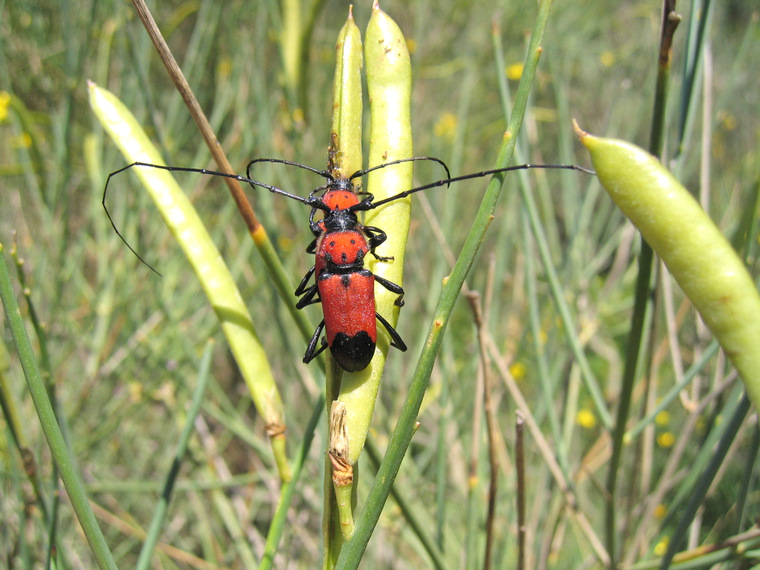
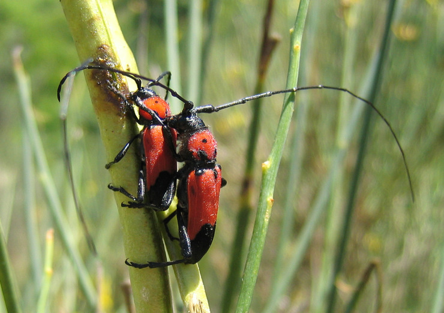

| PHRYGANA | Fauna | Flora | Galles | liste des espèces |
contact -
info - commentaires phrygana1 (at) gmail.com |
| Particularités crétoises | nouveautés | Mines | ressources naturelles |
| Purpuricenus desfontainii desfontainii (Fabricius 1792) |
| 114 | Fauna | CERAMBYCIDAE | Cerambycinae | Purpuricenus Dejean 1821 |
 Purpuricenus desfontainii desfontainii Amari 06 juin 2005 |
| Adulte: longueur du corps 16 - 20 mm. Couleur de fond rouge brique avec l'apex des élytres noir, la tête et les antennes noirs. | |
| La larve est polyphage; cycle de développement sur 2 à 3 ans dans les branches et rameaux | |
| Espèce univoltine : période de vol en mai juin juillet | |
| Statut en Crète: indigène | |
| Biotopes en Crète: phrygana, falaises calcaires, bords des chemins, vieilles olivaies, garrigue | |
| Altitudes: 0 - 750 m. | |
| Distribution: Afrique du Nord, Libye | |
| Note: la sous-espèce Purpuricenus desfontainii inhemoralis occupe la Grèce continentale, la Turquie, le Liban, Israël | |
| Larve polyphage: divers arbres et arbustes dont: Spartium junceum, Quercus ilex | ||
|
|
|
|
| Ceratonia siliqua | Pistacia lentiscus | |
|
 Purpuricenus desfontainii desfontainii Amari 06 juin 2005 |
| 01 juin 2012 |
| © paul fontaine -- © Phrygana.eu 2007 -- 2013 |